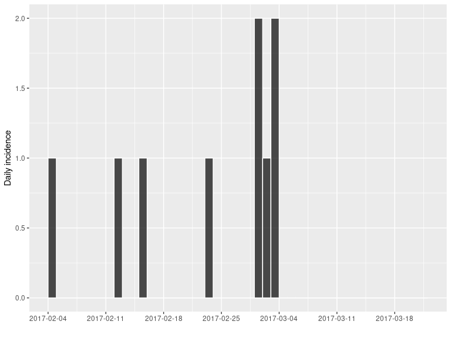
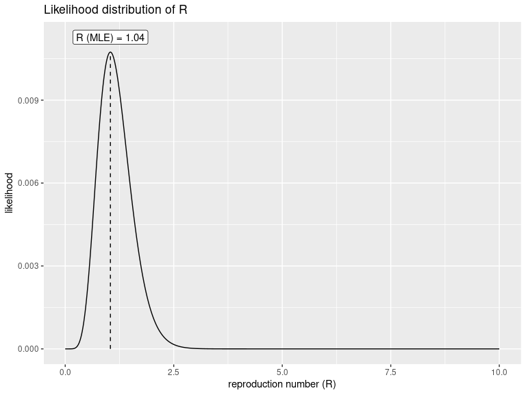
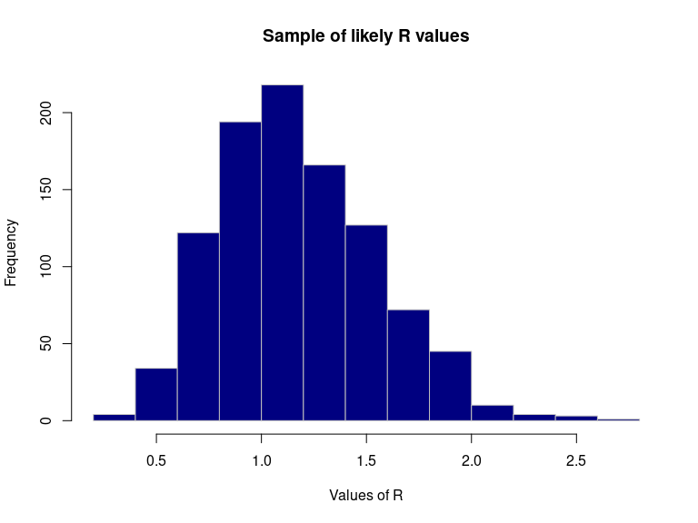
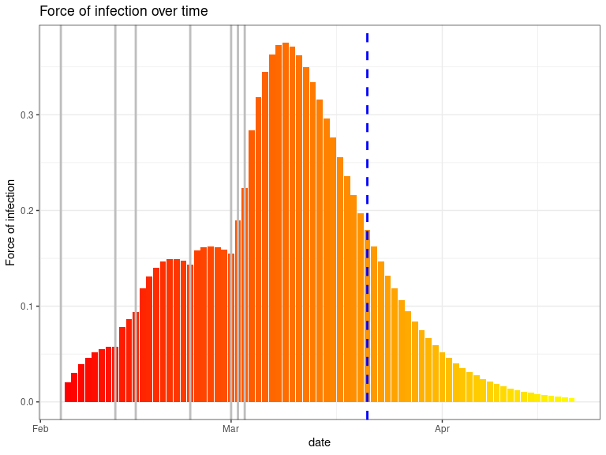

This package implements simple estimation of infectiousness, as measured by the reproduction number (R), in the early stages of an outbreak. This estimation requires:
prior knowledge: the serial interval distribution, defined as the mean and standard deviation of the (Gamma) distribution. In general, these parameters are best taken from the literature.
data: the daily incidence of the disease, including only confirmed and probable cases.
Installing the package
To install the current stable, CRAN version of the package, type:
install.packages("earlyR")
To benefit from the latest features and bug fixes, install the development, github version of the package using:
devtools::install_github("reconhub/earlyR")
Note that this requires the package devtools installed.
What does it do?
The main features of the package include:
get_R: a function to estimate R as well as the force of infection over time, from incidence data; output is an object of classearlyRsample_R: a function to obtain a sample of likely R valuesplot: a function to visualiseearlyRobjects (R or force of infection).points: a function usingearlyRobjects to add the force of infection to an existing plot.
Resources
Worked example
This example is a simplified version of the introductory vignette (see section below), where earlyR is used in conjunction with other packages to assess infectiousness and growth potential of an early Ebola Virus Disease (EVD) outbreak. Here, we simply illustrate how earlyR can be used for assessing infectiousness based on a few confirmed/probable cases.
In this example we assume a small outbreak of Ebola Virus Disease (EVD), for which the serial interval has been previously characterised. We study a fake outbreak, for which we will quantify infectiousness (R), and then project future incidence using the package projections.
The fake data we consider consist of confirmed cases with the following symptom onset dates:
onset <- as.Date(c("2017-02-04", "2017-02-12", "2017-02-15", "2017-02-23", "2017-03-01", "2017-03-01", "2017-03-02", "2017-03-03", "2017-03-03"))
We assume the current date is 21st March. We compute the daily incidence using the package incidence:
library(incidence) today <- as.Date("2017-03-21") i <- incidence(onset, last_date = today) i #> <incidence object> #> [9 cases from days 2017-02-04 to 2017-03-21] #> #> $counts: matrix with 46 rows and 1 columns #> $n: 9 cases in total #> $dates: 46 dates marking the left-side of bins #> $interval: 1 day #> $timespan: 46 days #> $cumulative: FALSE plot(i, border = "white")

Note: It is very important to make sure that the last days without cases are included here. Omitting this information would lead to an over-estimation of the reproduction number (R).
For estimating R, we need estimates of the mean and standard deviation of the serial interval, i.e. the delay between primary and secondary symptom onset dates. This has been quantified durin the West African EVD outbreak (WHO Ebola Response Team (2014) NEJM 371:1481–1495):
mu <- 15.3 # mean in days days sigma <- 9.3 # standard deviation in days
The function get_R is then used to estimate the most likely values of R:
library(earlyR) res <- get_R(i, si_mean = mu, si_sd = sigma) res #> #> /// Early estimate of reproduction number (R) // #> // class: earlyR, list #> #> // Maximum-Likelihood estimate of R ($R_ml): #> [1] 1.041041 #> #> #> // $lambda: #> NA 0.01838179 0.0273192 0.03514719 0.0414835 0.04623398... #> #> // $dates: #> [1] "2017-02-04" "2017-02-05" "2017-02-06" "2017-02-07" "2017-02-08" #> [6] "2017-02-09" #> ... #> #> // $si (serial interval): #> A discrete distribution #> name: gamma #> parameters: #> shape: 2.70655567117586 #> scale: 5.65294117647059 plot(res)

The first figure shows the distribution of likely values of R, and the Maximum-Likelihood (ML) estimation. To derive other statistics for this distribution, we can use sample_R to get a large sample of likely R values, and then compute statistics on this sample:
R_val <- sample_R(res, 1000) summary(R_val) # basic stats #> Min. 1st Qu. Median Mean 3rd Qu. Max. #> 0.2603 0.9009 1.1211 1.1694 1.4139 2.6126 quantile(R_val) # quartiles #> 0% 25% 50% 75% 100% #> 0.2602603 0.9009009 1.1211211 1.4139139 2.6126126 quantile(R_val, c(0.025, 0.975)) # 95% credibility interval #> 2.5% 97.5% #> 0.5402903 1.9622122 hist(R_val, border = "grey", col = "navy", xlab = "Values of R", main = "Sample of likely R values")

Finally, we can also represent infectiousness over time using:
library(ggplot2) plot(res, "lambdas", scale = length(onset) + 1) + geom_vline(xintercept = onset, col = "grey", lwd = 1) + geom_vline(xintercept = today, col = "blue", lty = 2, lwd = 1) #> Warning: Removed 1 rows containing missing values (position_stack).

This figure shows the global force of infection over time, with vertical grey bars the dates of symptom of onset. The dashed blue line indicates current day. Note that the vertical scale for the bars is arbitrary, and only represents the relative force of infection.
Vignettes
`Currently available vignettes can be accessed from R using:
-
vignette("earlyR"): an introduction toearlyRusing a simulated Ebola Virus Disease (EVD) outbreak; includes projections of future incidence using projections.
Getting help online
Bug reports and feature requests should be posted on github using the issue system. All other questions should be posted on the RECON forum:
http://www.repidemicsconsortium.org/forum/
Contributions are welcome via pull requests.
Please note that this project is released with a Contributor Code of Conduct. By participating in this project you agree to abide by its terms.